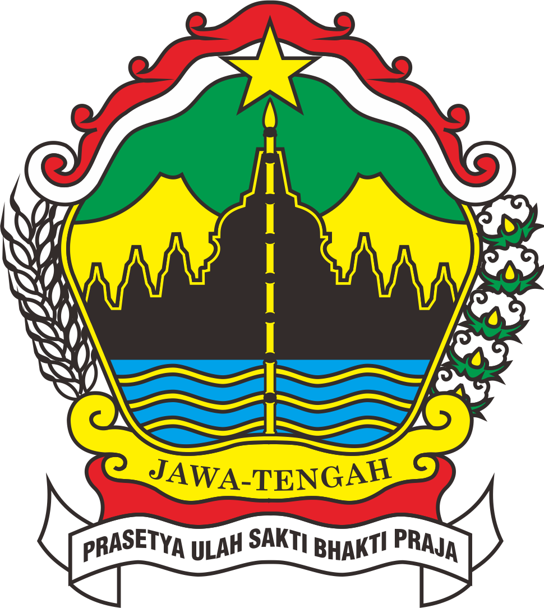

Program Pendidikan dan Pelatihan: Pemerintah dan organisasi non-pemerintah (NGO) telah meluncurkan berbagai program pendidikan dan pelatihan keterampilan untuk meningkatkan kapasitas tenaga kerja.
Jawa Tengah (disingkat Jateng) adalah sebuah wilayah provinsi di Indonesia yang terletak di bagian tengah Pulau Jawa. Ibu kota Provinsi Jawa Tengah berada di Kota Semarang.

Provinsi Jawa Tengah, merupakan wilayah yang memiliki kekayaan alam yang melimpah, dengan daerah pegunungan, hutan, dan lahan pertanian yang subur. Namun, meskipun kekayaan alamnya melimpah, provinsi ini masih menghadapi tantangan serius dalam hal kemiskinan. Tingkat kemiskinan di Jawa Tengah dipengaruhi oleh berbagai faktor, termasuk keterbatasan akses pendidikan, ketimpangan ekonomi, dan keterbatasan infrastruktur.
Beberapa Faktor Penyebab Kemiskinan di Jawa Tengah adalah Keterbatasan Akses Pendidikan. Adanya banyak penduduk, terutama di daerah pedesaan, yang tidak memiliki akses yang memadai ke pendidikan berkualitas. Hal ini membatasi kemampuan mereka untuk mendapatkan pekerjaan yang lebih baik dan berpenghasilan layak. Ketimpangan Ekonomi, Distribusi pendapatan yang tidak merata antara daerah perkotaan dan pedesaan menyebabkan ketimpangan ekonomi yang signifikan. Daerah pedesaan umumnya memiliki tingkat kemiskinan yang lebih tinggi. Akses Terbatas ke Layanan Kesehatan, Keterbatasan akses ke layanan kesehatan yang memadai meningkatkan risiko kesehatan yang buruk dan beban ekonomi pada keluarga miskin.
Ada beberapa tantangan yang dihadapi untuk menekan angka kemiskinan salah satunya adalah Ketidakmerataan Program, Program-program yang ada kadang tidak merata jangkauannya ke seluruh daerah. Ketergantungan pada Sektor Informal, Banyak penduduk yang masih bergantung pada sektor informal dengan pendapatan yang tidak menentu. dan yang paling sulit adalah korupsi dan birokrasi, korupsi dan birokrasi yang kompleks kadang menghambat distribusi bantuan dan pelaksanaan program pengentasan kemiskinan.